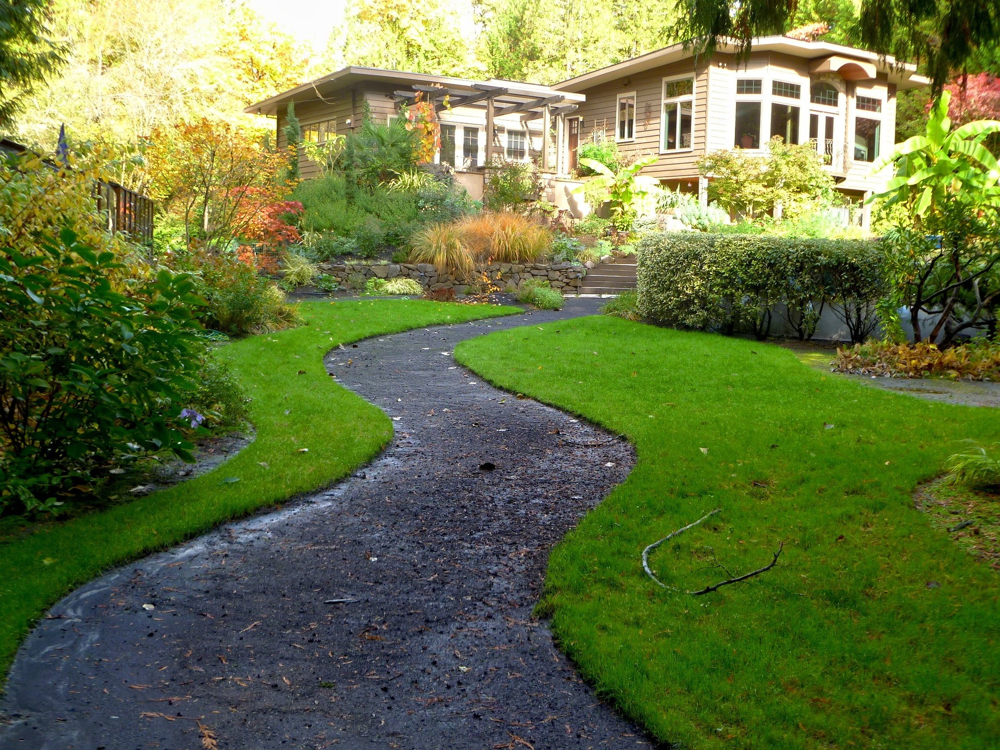
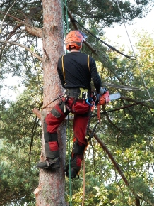
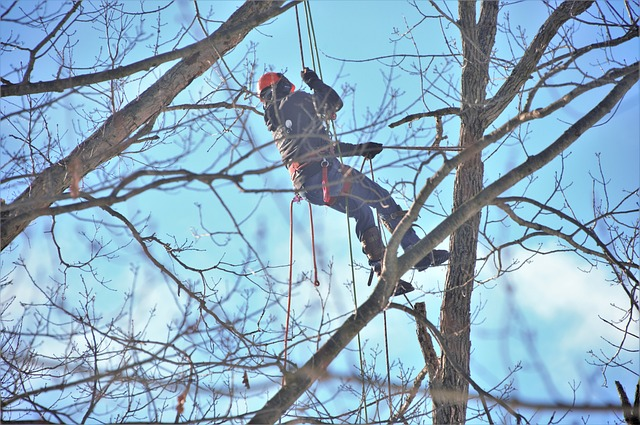

Garden landscaping is the ideal way to craft an attractive space to grow plants that give you a beautiful environment and design a practical layout that allows you to use your garden how you want.
Roof cleaning is the process of removing algae,mold, mildew, lichen and moss from roofs. Also cleaning oxidation on metal roofs.

Driveway washing services are suitable for many driveway surfaces including: Tarmacadam driveway cleaning Imprinted concrete driveway cleaning Cobblelock brick driveway cleaning Block Paving driveway cleaning Monoblock driveway cleaning.
If your gutters have started overflowing it’s time for a clean. We can unblock everything from your gutters.

Roll out grass can offer an amazing looking lawn quickly and effectively without having to wait years and dedicate time and effort to filling in all the bare patches. The garden grass is installed in a short space of time, transforming your garden.

We provide all types of tree surveys, including Arboricultural Impact Assessments and Tree Constraints Plan.

We offer a PVC cleaning service to homes and businesses throughout the Causeway Coast & Glens Borough. Removing dirt and grime from your home's PVC can really brighten up your property and improve curb appeal.

Deep cleaning involves a thorough scrubbing of all surfaces, even hard-to-reach areas.

Restore your block paved driveway are that it is important to maintain your block paving on a regular basis.
Our services include block paving cleaning, re-sanding and sealing.

We provide all types of tree surveys, including Arboricultural Impact Assessments and Tree Constraints Plan.
We provide all types of tree surveys, including Arboricultural Impact Assessments and Tree Constraints Plan.
We provide all types of tree surveys, including Arboricultural Impact Assessments and Tree Constraints Plan.
We provide all types of tree surveys, including Arboricultural Impact Assessments and Tree Constraints Plan.
We provide all types of tree surveys, including Arboricultural Impact Assessments and Tree Constraints Plan.
We provide all types of tree surveys, including Arboricultural Impact Assessments and Tree Constraints Plan.
Garden landscaping is the ideal way to craft an attractive space to grow plants that give you a beautiful environment and design a practical layout that allows you to use your garden how you want. Take a look at some of our favourite ways to get that garden into shape this summer
Roof cleaning is the process of removing algae,mold, mildew, lichen and moss from roofs. Also cleaning oxidation on metal roofs. Cleaning can extend the duration ofccc a roof's ability to function. Algae and other types of build-up often form on the north and west parts of roofs that are shaded or receive less sun, and can reduce a roof's life expectancy. The presence of soot, dirt, or biomass can affect how much sunlight is absorbed by a roof and thus the amount of heat a building absorbs.
Driveway washing services are suitable for many driveway surfaces including: Tarmacadam driveway cleaning Imprinted concrete driveway cleaning Cobblelock brick driveway cleaning Block Paving driveway cleaning Monoblock driveway cleaning.
If your gutters have started overflowing it’s time for a clean. We can unblock everything from your gutters including: moss, leaves, silt and general debris. Anything removed can either be disposed of in your compost bin or we can remove it from your premises for you.
It’s best to get your gutters cleaned at least once a year – a popular time for our clients is during the big spring clean to get rid of the winter’s debris.
Roll out grass can offer an amazing looking lawn quickly and effectively without having to wait years and dedicate time and effort to filling in all the bare patches. The garden grass is installed in a short space of time, transforming your garden. With the proper maintenance, your garden can stay looking wonderful for years after you have installed the rollout grass.
We provide all types of tree surveys, including Arboricultural Impact Assessments and Tree Constraints Plan.
We offer a PVC cleaning service to homes and businesses throughout the Causeway Coast & Glens Borough. Removing dirt and grime from your home's PVC can really brighten up your property and improve curb appeal.
House wash down. Deep cleaning involves a thorough scrubbing of all surfaces, even hard-to-reach areas. Everything in your house that a stool can reach will be hand-wiped. Aside from the in-depth approach, it promotes general sanitation and livability.
Blockpaving Resand. Restore your block paved driveway are that it is important to maintain your block paving on a regular basis, as without regular cleaning, driveways can become dirty and damp weather can attract algae, moss, lichen and weeds to grow on your driveway blocks paving and slabs and in the joints, in turn this can cause the block paving and other areas of the driveway to become cracked, sink or raised as a result.
Our services include block paving cleaning, re-sanding and sealing.
 Home
About
Work
Services
Contact
Home
About
Work
Services
Contact